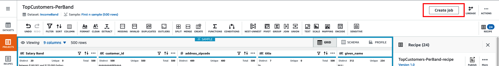
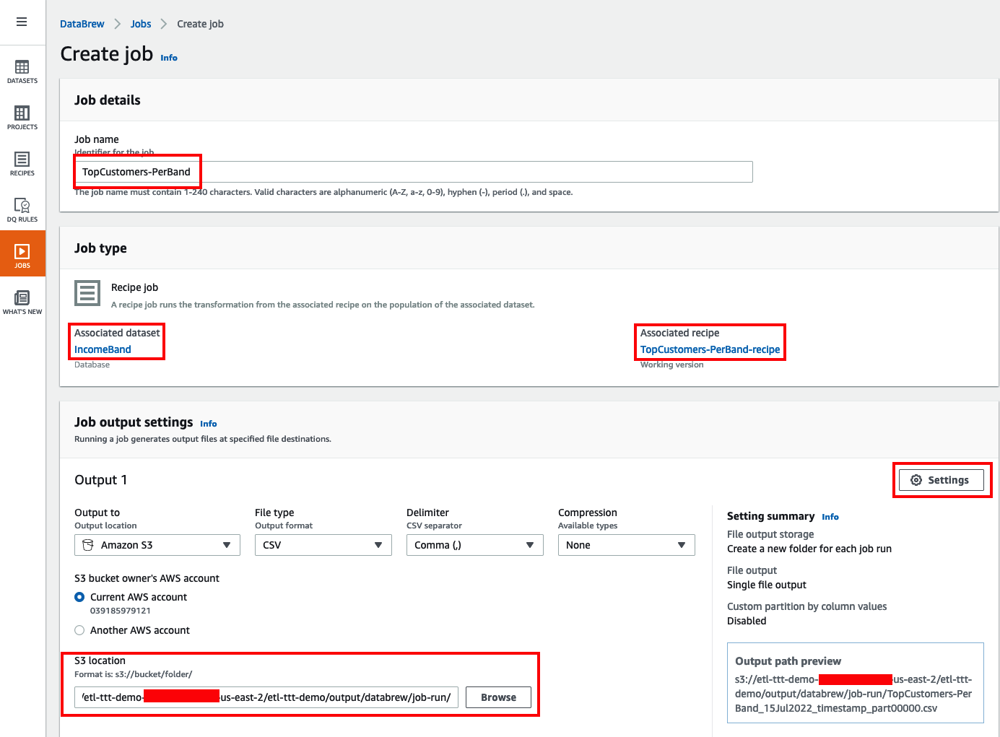
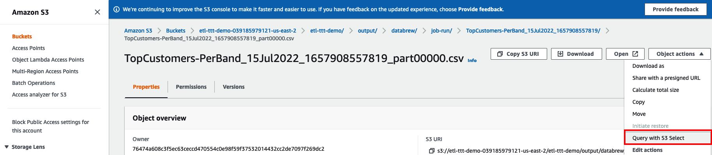
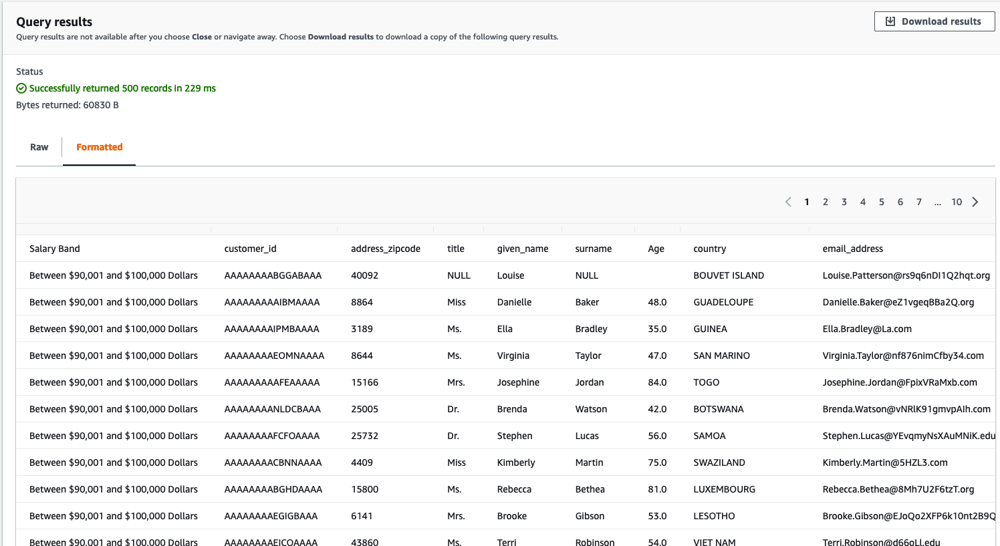

RUNNING GLUE DATABREW JOBS
DataBrew takes on the job of transforming your data by running the instructions that you set up when you made a recipe. The process of running these instructions is called a job.
A job can put your data recipes into action according to a preset schedule. But you aren't confined to a schedule. You can also run jobs on demand. If you want to profile some data, you don't need a recipe. In that case, you can just set up a profile job to create a data profile.
6. Turning projects and recipes into Glue DataBrew jobs¶
The fastest way to turn your project into a job is from the Project page itself. Once all the steps are in place and the recipe is completed you can simply click on the button Create job on the upper right top corner.

The Create job page will open. There, do the following:
Set job details:
1. Under Job details set the Job name to: TopCustomers-PerBand
2. Under Job type confimr that the Associated dataset is the IncomeBand dataset and the Associated recipe is the TopCustomers-PerBand-recipe
Job output setting
3. Under Job output settings navigate to the S3 location s3://\${BUCKET_NAME}/etl-ttt-demo/output/databrew/job-run/ where \${BUCKET_NAME} is your own S3 bucket name.
4. Click on the Settings button (with a small gear icon). On the pop-up window that appear, under File Partitioning, choose the Single file output option and click Save.
5. Keep everything else default here.

Job role name
5. Under Permission select AWSGlueDataBrewServiceRole-etl-ttt-demo in Role name dropdown list.
5. Click Create and run job.
Run job
Once the job has been created, click the JOB icon on the left. Under the Recipe jobs tab you will see a new job with name TopCustomers-PerBand in the Running state. Wait for the job to finish.

Job lineage
Once the job finishes, click on the job name. You should see one succeeded job run under Job run history tab. Click the Data linage tab to see the data linage graph for the job.

You should see a new folder in S3 under s3://\${BUCKET_NAME}/etl-ttt-demo/output/databrew/job-run/ which contains the output of the job. Go inside this folder and click on the file that starts with TopCustomers-PerBand_. Use S3 Select to explore the file contents.

Under Query with S3 Select, keep CSV and Comma as the selected options for both Input settings and Output settings. Scroll to the SQL query section and explore the generated data with the following query:
SELECT * FROM s3object s LIMIT 500
Click on Run SQL Query then scroll to the Query results section and choose the Formatted tab to see the data in a nice tabular format:
